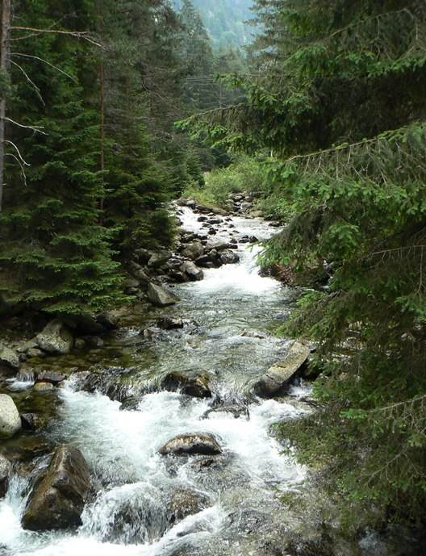
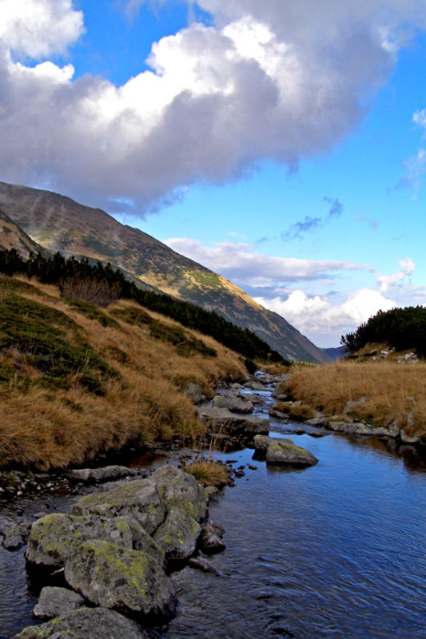
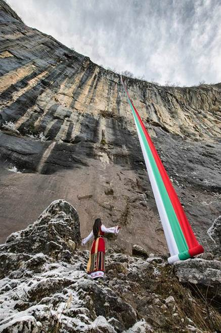
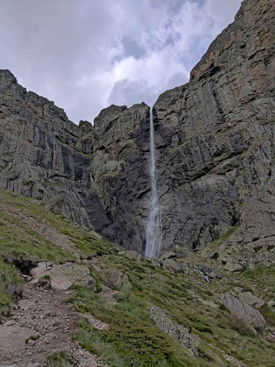
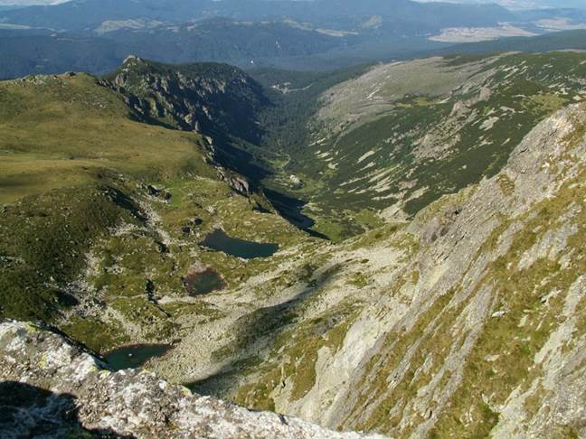
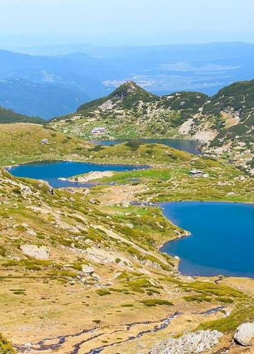
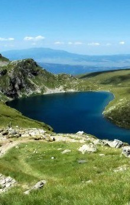
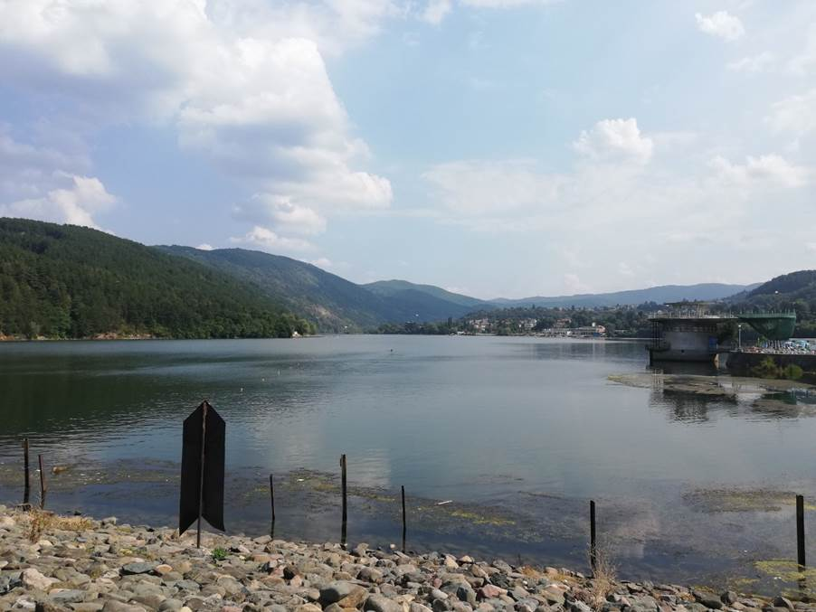

Река Искър
|
|  |
Река Искър извира от Рила планина и се образува от сливането на реките Черни Искър
(лява съставяща) и Бели Искър (дясна съставяща), на 500 м северно от село Бели Искър, на 1047 м н.в. Веднага след това навлиза в
Самоковската котловина. След като премине през нея и изтече от язовир „Искър“ между планините Плана на запад и Лозенска планина на
изток, формира дълбокия и живописен Панчаревски пролом (22 км). След напускането на язовир „Панчарево“ реката навлиза в Софийското
поле, като преминава покрай източните квартали на София и при град Нови Искър навлиза във величествения Искърски пролом (около 65 км).
След село Лютиброд Искър излиза от Стара планина, продължава в източна посока и долината ѝ се разширява.
При град Роман приема отдясно най-големия си приток река Малки Искър, при село Карлуково завива на север, а при село
Чомаковци навлиза в Дунавската равнина и течението ѝ се ориентира на североизток. В Дунавската равнина долината на Искър е широка
и асиметрична с по-стръмен десен склон. На 2,3 км североизточно от село Байкал се влива като десен приток в река Дунав
(на 637-ми км), на 25 м н.в.
|
река Марица
|
Река Марица води началото си от двете Маричини езера, разположени в дълбок циркус на
2378 метра надморска височина между върховете Манчо (2771 m, на югоизток), Маришки чал (2765 m, на юг) и Близнаците (2779 m, на запад)
в Рила. Горното течение на реката е частта от извора до град Белово. Надолу от езерата Марица протича с много голям наклон – над 300‰,
в ледникова долина с широко дъно, като преодолява неравностите на терена с редица бързеи и водопади. Средното течение на реката
обхваща участъка през Горнотракийската низина от град Белово до българската граница при село Капитан Андреево. След град Белово,
Марица навлиза в Горнотракийската низина. До град Пазарджик низината е широка около 10 – 15 km.Долното течение на Марица обхваща
участъка от българската граница до устието на реката. Тук тя е по-широка и по-дълбока. На места коритото ѝ достига до 1 km ширина.
Като общо реката тече на юг, но в района на гръцкия град Димотика прави доста завои.
|
 |
Водопад Скакля
|
|  |
Скакля или Врачанска Скакля е водопад във Врачанския Балкан. Той е най-високият
непостоянно течащ водопад в България и на Балканите – 141 m. Намира се на 1,5 km южно от Враца, зад хълма Калето. В района му са
открити останки от средновековното българско селище Патлейна. Красив през всички сезони, от горната му част се откриват прекрасни
гледки към Враца и Врачанското поле. Пресечна точка на няколко туристически маршрута. Поради непостоянно течащата му вода,
Райското пръскало се смята за най-високия водопад на Балканите.
|
Водопад Райското пръскало
|
Райското пръскало е най-високият постоянен водопад в България и на Балканския полуостров – 124.5
метра. Намира се в Стара планина, на южния склон под най-високия старопланински връх – Ботев. На територията е на Национален парк
„Централен Балкан“. Обявен е за защитен природен обект през 1965 г. Образуван е от водите на Пръскалската река, идващи от вечния
снежник, разположен под връх Ботев, който дори през лятото не се стопява напълно. След като тече по полегатия тревист склон на върха,
потокът достига до горния край на скален пояс от отвесни скали, наричани Райските скали, и прави големия си скок.
След това се спуска в бездните на Южния Джендем и се влива в Бяла река. Местността и природата са впечатляващи, а скалите привличат
много любители на скалното катерене. Райското пръскало понякога е наричано неправилно Калоферско пръскало или Голям Джендемски
водопад, но това са названията на друг голям водопад.
|
 |
|
Езера |
Мальовишки езера
|
|  |
Мальовишките езера е група от три езера в Северозападна Рила, разположени терасовидно в
югозападната част на Мальовишкия циркус, в южната част на склоновата заравненост Мальово поле. Заградени са от върховете
Малка Мальовица и Орлето на югоизток, Мальовица на юг, Ушите и част от рида Калбура на запад. Разположени са едно под друго в посока
от югозапад на североизток на протежение от 300 m. От най-горното езеро изтича поток, който минава последователно през останалите
две и продължава в посока север-североизток, представлявайки ляв приток на река Мальовица, която пък се влива отдясно в река Черни
Искър.
|
|
Седемте рилски езера
|
|  |
Езерата се намират в Северозападна Рила и са разположени стъпаловидно между 2095 и 2535 м.
Отделните езера са свързани помежду си чрез малки поточета. При преминаването на водата по тези поточета са образувани малки
водоскоци и водопади. Първите три езера – Сълзата, Окото и Бъбрека – се оттичат всяко поотделно в Близнака, от който водата
преминава последователно през Трилистника, Рибното и Долното езеро. През последните две езера минава един вече по-мощен поток,
който, изтичайки от най-долното езеро, дава началото на река Джерман (ляв приток на Струма).
|
 |
езеро Панчарево
|
Намира се на 12 km южно от центъра на София в посока Самоков и Боровец, на 2 km от
Околовръстния път, по протежение на ул. „Самоковско шосе“. Разположено е в самия край на живописния Панчаревски пролом, между
Витоша и Лозенската планина, при вливането на река Бистрица в Искър. Местността съчетава в себе си неповторимия ландшафт на
водната площ и средновисоката планина. На западния му бряг е разположено курортното село Панчарево и Панчаревските минерални извори,
до него опират също селата Кокаляне (югозападно) и Герман (североизточно). Източният му бряг е зает от дъбови и борови гори,
а склоновете се спускат стръмно към водата, на места завършвайки със сипеи.
|
 |
|